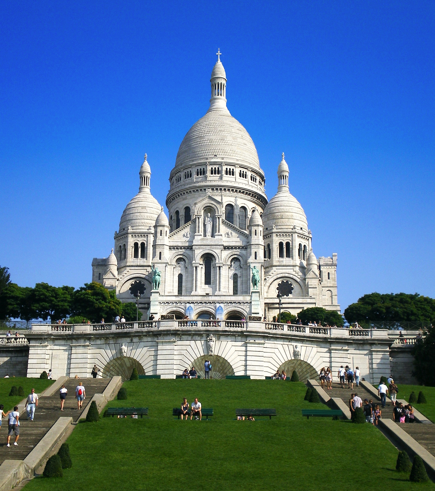
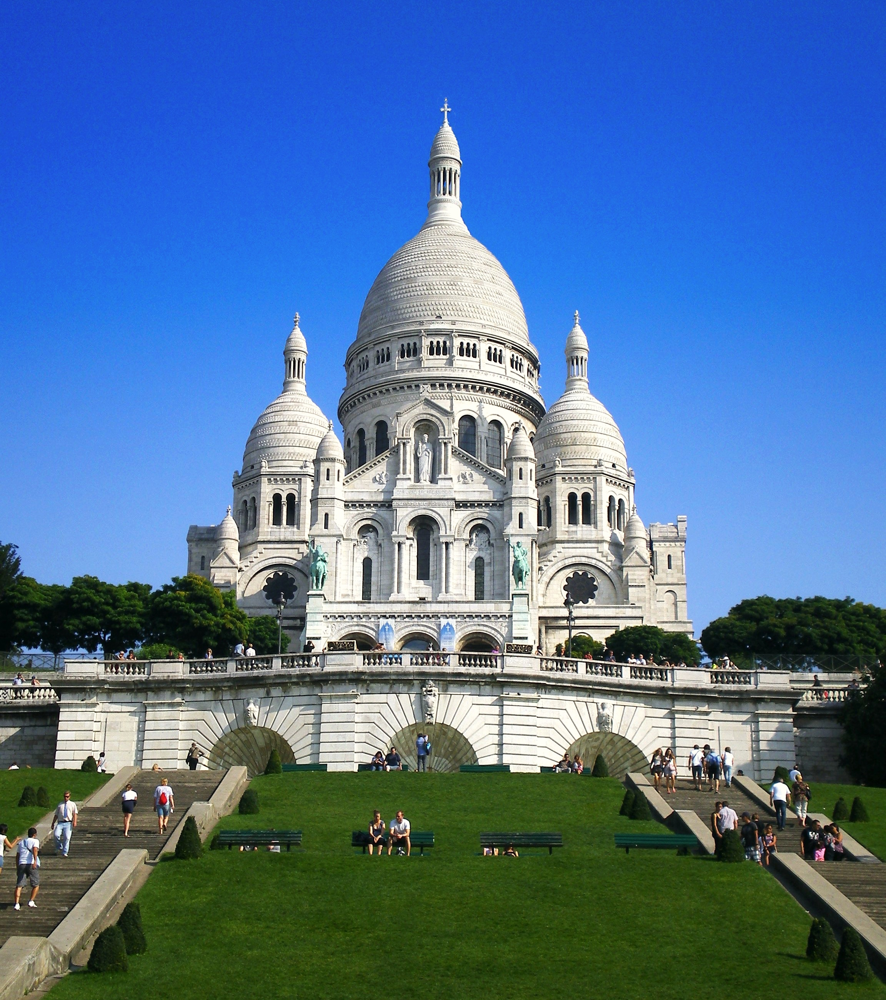
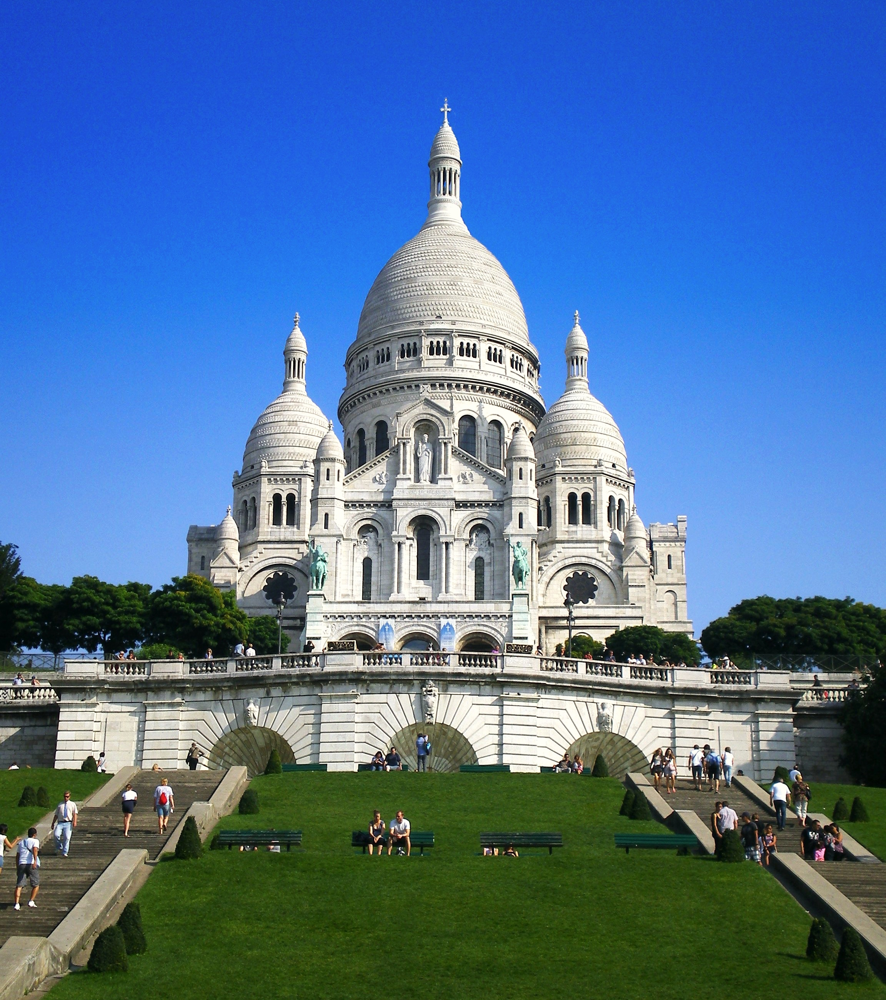

Welcoming more than 89 million visitors per year, France is the most visited country in the world.
Little wonder, owing to the eternal pull of the cosmopolitan capital of Paris. City breaks to the French capital are always popular with couples,
who long to experience the romance of Paris’s historic streets and glistening Eiffel Tower. Furthermore, Paris is a shopping paradise and boasts some of the finest restaurants in the world.
On the other hand, France offers an array of Mediterranean beaches along its glamorous Côte d’Azur. The French Riviera is awash with upmarket resort towns and coastal villages,
making it another top destination for tourism. France’s diversity doesn’t stop there, as the chateaux and vineyards of the Loire Valley are another reason to visit this European nation.
France known as a country of art, culture, and romance, millions of travelers arrive in France every year.
Some head for the mountains, others to the seaside, and some to the picturesque villages of rural France.
Millions, however, are drawn to the urban heartlands of French culture-the cities of France. Paris is The Most Visited City in France
France’s cosmopolitan capital holds the number one spot on this list and it is not hard to see why. A truly global city and one of the largest in Europe,
Paris has a reputation for being among the most beautiful and romantic places in the world. It is a focal point of tourism in France.
The “City of Light” is renowned for having been a center of European art for centuries, from Baroque to Impressionism and its many world-famous art museums reflect this history.
A world capital of fashion, food, and culture, visitors can enjoy fine dining, stroll along the banks of the Seine,
and visit the cobbled streets of the historic Montmartre district where artists from Manet and Van Gogh to Picasso set up their studios.
Few cities can claim to have as many iconic landmarks as Paris.
